Zalga kelib, telefondan «bugun qanday mashq qilay» deb qidirasiz.
Bosh sahifada bugungi reja turadi: qaysi mashq, necha set, necha kilogramm.
GYMbos — shaxsiy murabbiy Telegram’ingizda. Maqsad va jihozlaringizga mos dastur tuzadi, har mashqning texnikasini ko‘rsatadi va keyingi safar qancha kilogramm olishni o‘zi hisoblaydi.
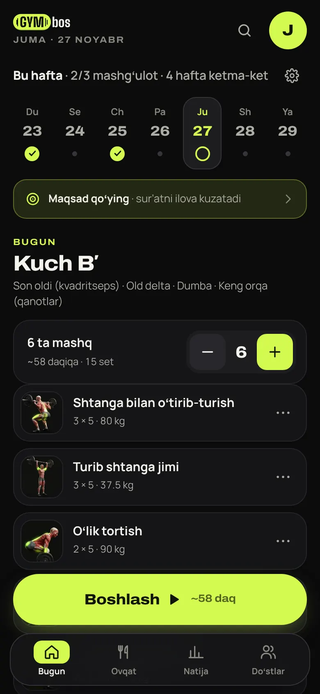
Reja tayyor. Texnika ko‘rsatilgan. Keyingi vazn hisoblangan. Sizga faqat zalga borib, bosish qoladi.
Gap faqat chiroyli tanada emas. Xalqaro tadqiqotlar kuch mashqi umr, yurak, suyak va kayfiyat uchun nima berishini o‘lchagan:
Haftasiga atigi 30–60 daqiqa kuch mashqi umumiy o‘lim, yurak-qon tomir kasalliklari, saraton va diabet xavfini kamaytiradi.
Momma va boshq., 2022Harakatsiz kattalarda shunday. 10 haftalik kuch mashqi esa o‘rtacha 1,4 kg mushak qo‘shib, 1,8 kg yog‘ni kamaytiradi.
Westcott, 201233 ta tadqiqot tahlili: kuch mashqi depressiya alomatlarini sezilarli kamaytiradi.
Gordon va boshq., 20188 oylik og‘ir kuch mashqidan keyin (mashq qilmaganlarda −1,2%). Tadqiqot suyak zichligi past ayollarda o‘tkazilgan: to‘g‘ri texnika bilan og‘ir vazn suyakni mustahkamlaydi.
LIFTMOR, 2018Dinamik kuch mashqlari pastki (diastolik) qon bosimini o‘rtacha shuncha pasaytiradi.
Cornelissen & Smart, 2013JSST tavsiyasi: kattalarga haftasiga 150–300 daqiqa o‘rtacha faollik va kamida 2 kun barcha yirik mushaklar uchun kuch mashqi.
JSST (WHO), 2020Boshlash uchun murakkab reja shart emas: GYMbos haftasiga 2 kunlik dasturdan boshlab beradi.
Haftasiga 2 kundan boshlashZalga kelib, telefondan «bugun qanday mashq qilay» deb qidirasiz.
Bosh sahifada bugungi reja turadi: qaysi mashq, necha set, necha kilogramm.
Bir oydan beri bir xil vazn ko‘taryapsiz, o‘sish yo‘q.
Ilova har setni yozib boradi va keyingi safar qancha qo‘shishni o‘zi aytadi.
Ozmoqchisiz, lekin osh va somsadan voz kechib bo‘lmaydi.
Kaloriyani milliy taomlar bilan hisoblaysiz: bazada 51 ta taom porsiyasi bilan.
Quyidagi ekranlar ilovaning o‘zidan olingan.
Maqsadingiz, haftada necha kun borishingiz, zal yoki uy, qanday jihoz borligi va qayeringiz og‘rishiga qarab GYMbos haftalik dastur tuzadi.
Har setdan keyin ✓ bosasiz. Ilova natijani yozib boradi: bajarilsa vaznni oshiradi, qiyin bo‘lsa ushlab turadi.
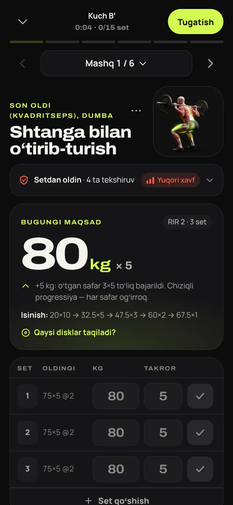
122 ta mashq va cho‘zilishning rasmi: qaysi mushak ishlayapti, harakatning pastki va yuqori nuqtasi, nafasni qachon olish.
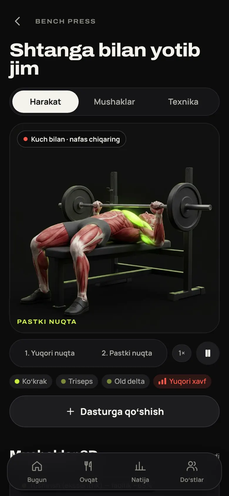
Kunlik kaloriya va oqsil me’yoringiz hisoblanadi. Milliy taomlarni kundalikka porsiya bilan qo‘shasiz: osh, lag‘mon, manti, somsa, sho‘rva.
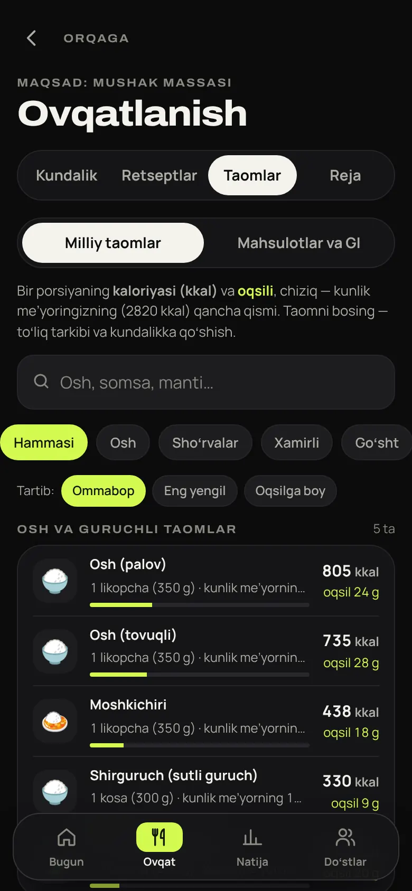
Har mashg‘ulot va har rekord saqlanadi. Haftalik hisobot qancha ko‘targaningizni, qaysi mushak ishlaganini va nimaga e’tibor berishni ko‘rsatadi.
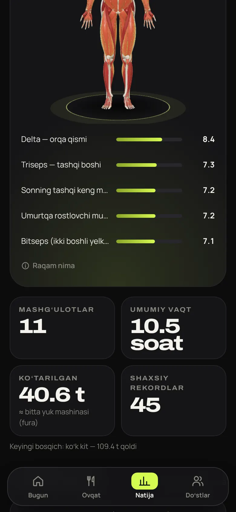
Lime rangda — shu mashqda ishlayotgan mushaklar. Ilovada har rasm ustida mushak nomlari va to‘g‘ri texnika belgilari turadi.
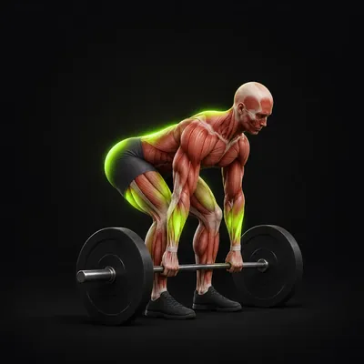
O‘lik tortish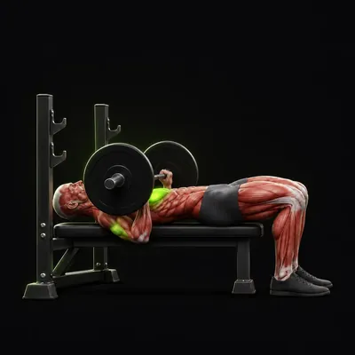
Shtanga bilan yotib jim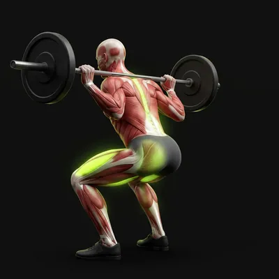
Shtanga bilan o‘tirib-turish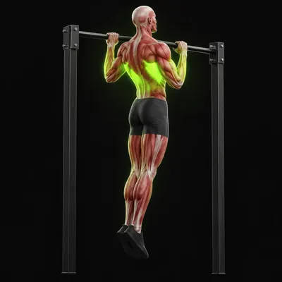
Turnikda tortilish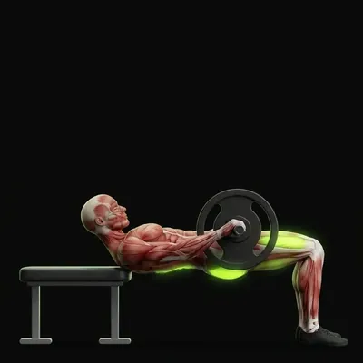
Shtanga bilan tos ko‘tarish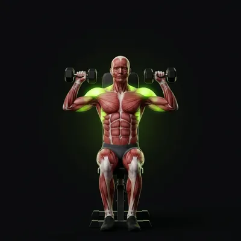
O‘tirib gantel jimi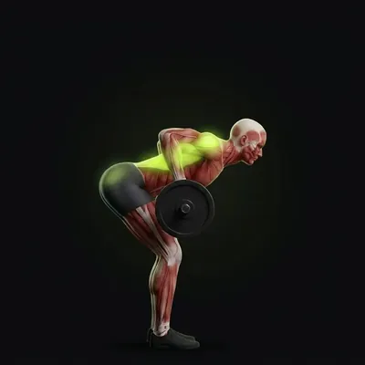
Engashib shtanga tortish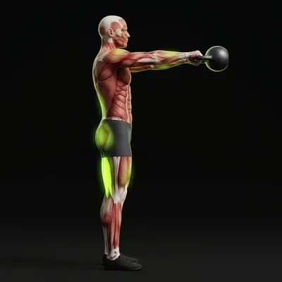
Girya silkitish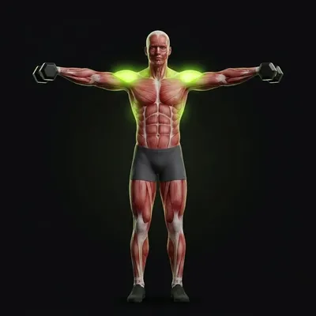
Gantelni yonga ko‘tarish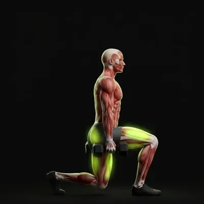
Gantel bilan split-o‘tirish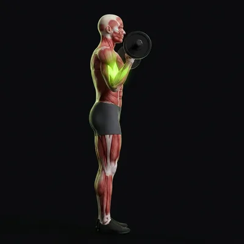
Shtanga bilan bitseps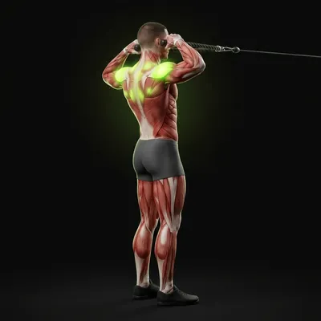
Arqonni yuzga tortish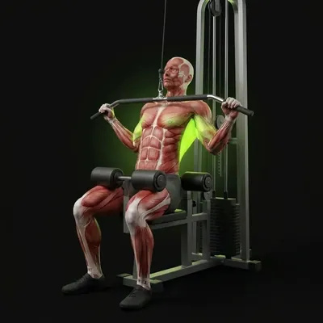
Yuqori blokni ko‘krakka tortish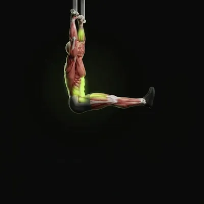
Turnikda oyoq ko‘tarish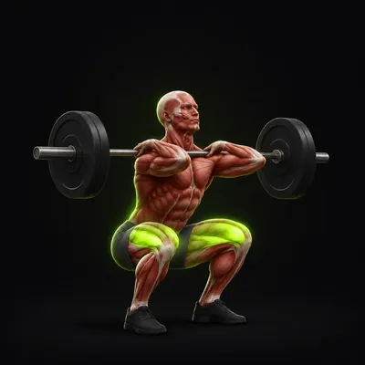
Old o‘tirish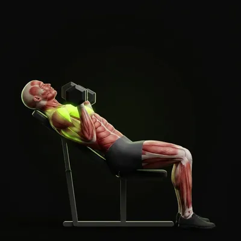
Qiya skameykada gantel jimi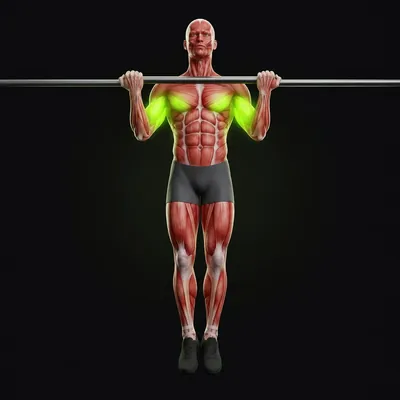
Teskari ushlab tortilishMashqni tanlang: rasmda to‘g‘ri harakat, 3D modelda esa ishlayotgan mushaklar. Mushak EMG tadqiqotlarida qanchalik kuchli ishlagan bo‘lsa, shunchalik yorqin yonadi.
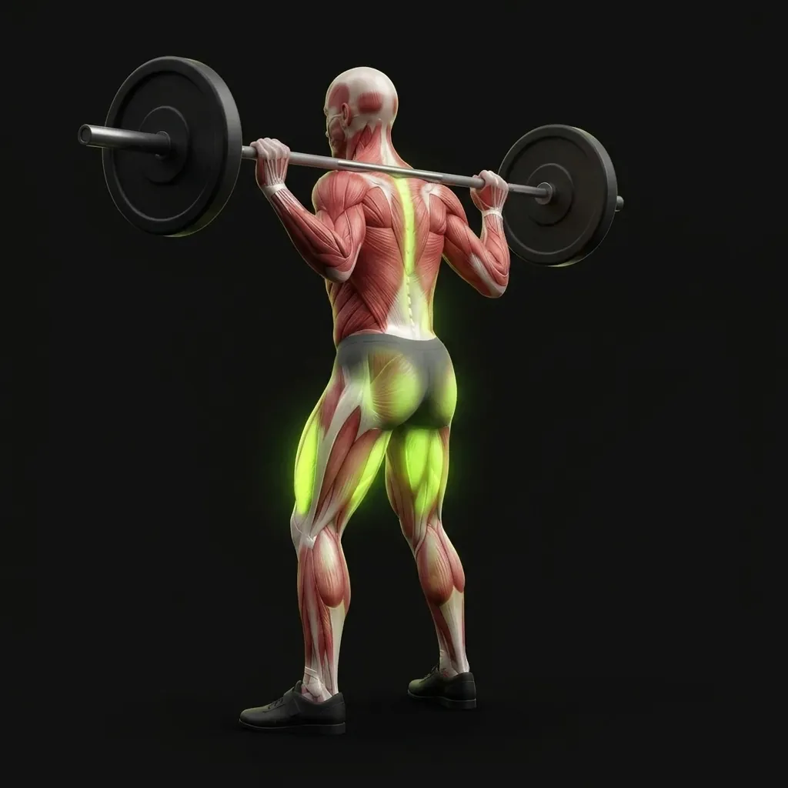
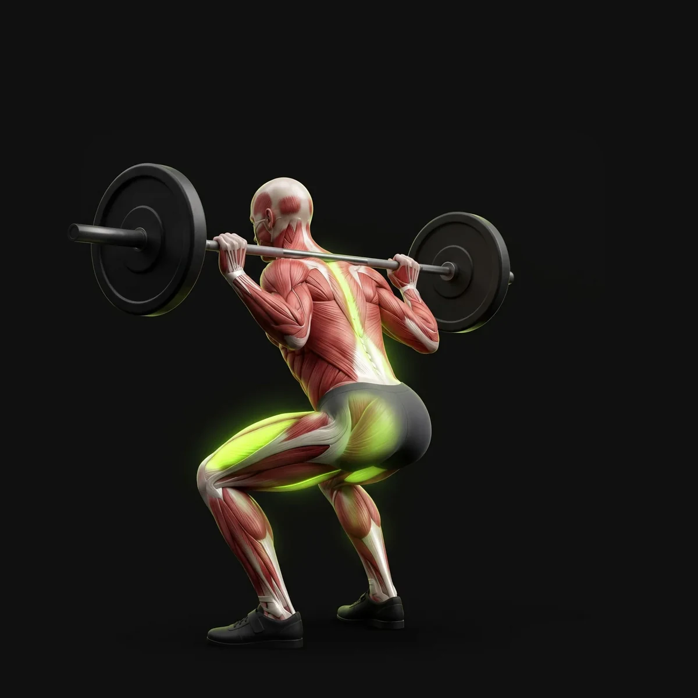
3D model: ~3,5 MB, «3D model» bosilganda yuklanadi. 3D model: Z-Anatomy (BodyParts3D asosida), CC BY-SA 4.0. Rasmlar — ilovadan.
Telegram’da @gym_bosbot ni oching. Ilova shu yerning o‘zida ochiladi, hech narsa o‘rnatilmaydi.
Maqsad, bo‘y va vazn, haftalik jadval, sog‘liq. Shundan dastur, kaloriya va oqsil me’yori tuziladi.
Set tugagach ✓ bosasiz. Dam olish vaqti, keyingi vazn va haftalik natijani GYMbos o‘zi hisoblaydi.
Ro‘yxatdan o‘tmasdan. Natijalar ilovadagi formulalar bilan hisoblanadi, kiritgan raqamlaringiz hech qayerga yuborilmaydi.
Ilovadagi formula bilan hisoblanadi: tinch holatdagi sarf (Mifflin–St Jeor), kundalik harakat, mashg‘ulotlar va maqsadingiz.
Haftasiga vaznning ~0.25–0.5% qo‘shilishi — asosan mushak, kam yog‘.
Taxminiy hisob. Ilova 2–3 haftalik vazningiz va yeganlaringizga qarab me’yorni o‘zi aniqlashtiradi.
51 ta milliy taomning odatiy porsiyasidagi kaloriya va oqsil. Chiziq — kunlik me’yoringizning (2 500 kkal, o‘rtacha) qancha qismi ekani. Taomni bosing: to‘liq tarkibi va yengilroq varianti.
oqsil 24 g (12%) · uglevod 91 g (45%) · yog‘ 39 g (43%)
Shuncha energiya: taxminan 2 soat 33 daqiqa tez yurish (70 kg odam)
Guruchni kamroq, go‘sht va achchiq-chuchukni ko‘proq oling. Haftada 1–2 marta — mutlaqo mumkin.
Yengil varianti ilovada retsepti bilan: Tovuqli yengil osh, 654 kkal, oqsil 44 g.
oqsil 10 g (12%) · uglevod 31 g (36%) · yog‘ 20 g (52%)
Shuncha energiya: taxminan 1 soat 6 daqiqa tez yurish (70 kg odam)
Tandir somsa yog‘li: bitta somsa — bir mahal ovqatning yarmi. Ko‘katli yoki qovoqli varianti yengilroq.
oqsil 22 g (15%) · uglevod 81 g (55%) · yog‘ 20 g (30%)
Shuncha energiya: taxminan 1 soat 54 daqiqa tez yurish (70 kg odam)
Go‘shtli qismini ko‘paytirib, xamirini kamaytiring.
Yengil varianti ilovada retsepti bilan: Tovuqli qovurma lag‘mon (yengil), 610 kkal, oqsil 46 g.
oqsil 25 g (18%) · uglevod 50 g (36%) · yog‘ 28 g (46%)
Shuncha energiya: taxminan 1 soat 44 daqiqa tez yurish (70 kg odam)
Qatiq bilan yeng — oqsil qo‘shiladi. 5 dona — to‘yimli bir mahal.
oqsil 17 g (39%) · uglevod 0 g (0%) · yog‘ 12 g (61%)
Shuncha energiya: taxminan 33 daqiqa tez yurish (70 kg odam)
Oqsilga boy, uglevod yo‘q. Non va yog‘li qismini kamroq, achchiq-chuchukni ko‘proq.
Yengil varianti ilovada retsepti bilan: Pechda tovuq kabob va achchiq-chuchuk, 488 kkal, oqsil 48 g.
oqsil 20 g (25%) · uglevod 20 g (25%) · yog‘ 18 g (50%)
Shuncha energiya: taxminan 1 soat 1 daqiqa tez yurish (70 kg odam)
Go‘shtli sho‘rva oqsilga boy; ustidagi yog‘ini olib tashlang.
oqsil 12 g (16%) · uglevod 38 g (51%) · yog‘ 11 g (33%)
Shuncha energiya: taxminan 57 daqiqa tez yurish (70 kg odam)
Yengil va to‘yimli — kechki ovqatga mos.
Yengil varianti ilovada retsepti bilan: Yengil mastava, 485 kkal, oqsil 29 g.
oqsil 20 g (18%) · uglevod 53 g (47%) · yog‘ 18 g (36%)
Shuncha energiya: taxminan 1 soat 26 daqiqa tez yurish (70 kg odam)
Sho‘rvali chuchvara qovurilganidan ancha yengil.
Mushakni bosing. Ro‘yxat EMG tadqiqotlaridan: mashq paytida mushak o‘z maksimal kuchining necha foizida ishlagani (% MVIC).
Qo‘lni oldinga-yuqoriga ko‘taradi va ko‘krak oldiga yaqinlashtiradi.
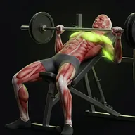
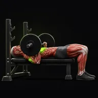
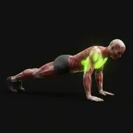
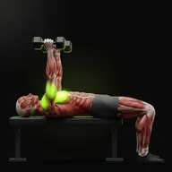
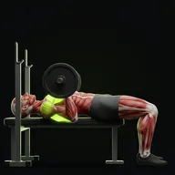
«~» — shu mashq uchun to‘g‘ridan-to‘g‘ri o‘lchov yo‘q, o‘xshash harakat bo‘yicha baholangan.
Oxirgi og‘ir setingizni kiriting. Taxminiy bir takrorlik maksimum va zalga qatnaydiganlar orasidagi darajangizni ko‘rasiz.
«O‘rta» darajasigacha: yana 26 kg. Ilova shu maqsadga qachon yetishingizni hisoblab boradi.
Me’yorlar: Strength Level foydalanuvchilari natijalarining 5, 20, 50, 80 va 95-persentillari; 1RM — Epley formulasi.
Bel/bo‘y nisbati yurak-qon tomir kasalliklari va qandli diabet xavfini tana vazn indeksidan (BMI) yaxshiroq ko‘rsatadi. Qoida oddiy: belingiz bo‘yingizning yarmidan kam bo‘lsin.
Qanday o‘lchanadi: kindik sathida, nafas chiqargandan keyin, qorinni tortmasdan.
Zo‘r ko‘rsatkich. Kuch mashqi va yetarli oqsil uni yillar davomida saqlashga yordam beradi.
Zonalar: 0,4 dan kam — juda ozg‘in, 0,4–0,5 — sog‘lom, 0,5–0,6 — xavf oshgan, 0,6 dan ko‘p — yuqori xavf. Ashwell va boshq., 2012. Tibbiy tashxis emas.
Shoshilgan ozish mushakni yeydi, shoshilgan massa esa yog‘ bo‘lib qoladi. Kalkulyator mushakni saqlaydigan xavfsiz sur’atda hisoblaydi: ozishda haftasiga vaznning 0,5–0,7% i, massada 0,25–0,5% i.
Sur’at: Garthe 2011, Helms 2014 (ozish), Iraki 2019 (massa); 1 kg ≈ 7 700 kkal (Hall 2008). Taxminiy hisob: ilova haftalik vazn trendingizga qarab rejani o‘zi tuzatadi.
Zalda eshitiladigan 10 ta gap. Har biriga javob bering: to‘g‘rimi yoki yo‘q, tushuntirish va ilmiy manbasi darhol chiqadi.
«Press mashqi qorindagi yog‘ni ketkazadi.»
Ilovadagi har bir hisob ochiq tadqiqotlarga tayanadi: ilovada 60 ta manba ko‘rsatilgan. Asosiylari:
Tinch holatdagi energiya sarfi: 10·kg + 6.25·sm − 5·yosh (+5 erkak / −161 ayol).
Maqola49 RCT, 1863 kishi: kuniga ~1.6 g/kg oqsildan keyin qo‘shimcha foyda deyarli yo‘q.
MaqolaHaftasiga tana vaznining 0.5–1% qadar ozing; yog‘lar kaloriyaning 15–30%, qolgani uglevod.
MaqolaHar bir qo‘shimcha haftalik set mushak o‘sishini o‘rtacha +0.37% ga oshiradi.
Maqola2480 dan ortiq mahsulotning glikemik indeksi; ilovadagi GI qiymatlari — maqolaning umumiy mahsulotlar jadvalidan (glyukoza = 100).
MaqolaGI o‘lchash usuli va toifalar: past ≤ 55, o‘rta 56–69, yuqori ≥ 70.
Yo‘q. Hozir ilovaning barcha imkoniyatlari bepul: dastur, mashqlar texnikasi, ovqatlanish, natijalar va do‘stlar lentasi. Karta ulash so‘ralmaydi.
Telegram’da @gym_bosbot botini oching. Ilova Telegram’ning o‘zida ochiladi, hech narsa yuklab olish va o‘rnatish shart emas. Telefon va kompyuterdagi Telegram’da ishlaydi.
Ha. Boshlovchilar uchun oddiy dastur beriladi: kam mashq, aniq vazn va takror. Har bir mashqning anatomik rasmi, to‘g‘ri bajarish va keng tarqalgan xatolar ko‘rsatiladi. Vazn esa siz bajarganingizga qarab asta-sekin oshadi.
Bo‘ladi. Qaysi jihozingiz borligini belgilaysiz: gantel, rezina, turnik, girya yoki faqat o‘z vazningiz. Ilova faqat shu jihozlar bilan bajariladigan mashqlarni beradi.
Anketada qayeringiz og‘rishini belgilaysiz. Shu joyga xavfli mashqlar dasturdan chiqariladi yoki yengilroq varianti beriladi, har mashqdan oldin qisqa xavfsizlik tekshiruvi bor. Kuchli yoki uzoq davom etayotgan og‘riqda avval shifokorga ko‘rining.
Mifflin–St Jeor formulasi, kundalik harakatingiz, mashg‘ulotlar soni va maqsadingiz bo‘yicha. Ilovada 51 ta milliy taom va 136 ta mahsulot bor: osh, lag‘mon, manti, somsani porsiya bilan kundalikka qo‘shasiz. Bir necha haftadan keyin ilova vazningiz o‘zgarishiga qarab me’yorni aniqlashtiradi.
Ha. Kaloriya, oqsil va kuch me’yorlari jinsga qarab hisoblanadi. Dasturdagi mashqlar maqsadingizga qarab tanlanadi: dumba va oyoqqa urg‘u, ozish yoki umumiy tetiklik.
Mashg‘ulotlar va ovqat kundaligi telefoningizda saqlanadi. Ro‘yxatdan o‘tsangiz, telefon almashganda yo‘qolmasligi uchun zaxira nusxasi serverda turadi. Do‘stlaringiz faqat siz ulashgan natijalarni ko‘radi. Batafsil maxfiylik sahifasida. Maxfiylik sahifasi
Ha, brauzer versiyasi bor (sahifa pastidagi «Brauzerda ochish» havolasi). Lekin do‘stlar lentasi, bulutdagi zaxira va botdan eslatmalar faqat Telegram’da ishlaydi. Brauzerda ochish
122 ta mashq rasmi, 51 ta milliy taom va sizga moslangan dastur. Bepul, o‘zbek tilida, Telegram ichida.